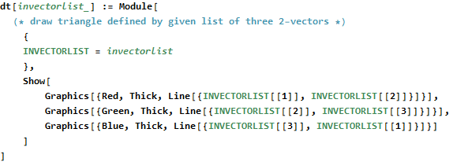
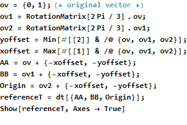
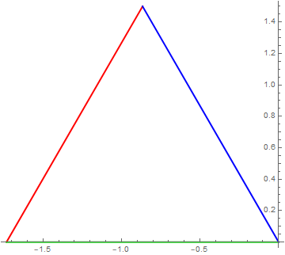
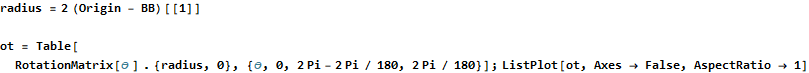
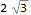
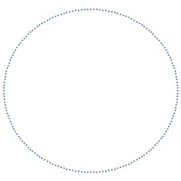
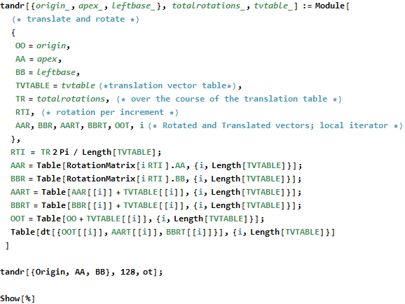
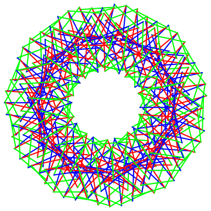
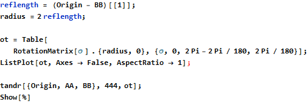
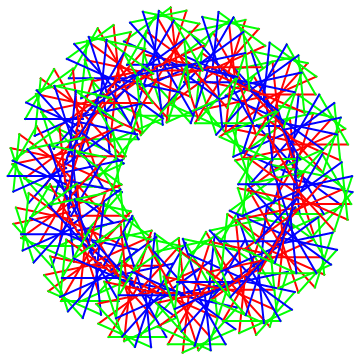

Primary Triangle Shirkins
David Morgan
Winnipeg Canada
dmmorgan@gmail.com

What follows assumes familiarity with 2D vector rotation and translation.
Define the equilateral triangle whose apex is the vector [0,1], and translate it such that its lower rightmost vertex is at the origin. This is referenceT, the reference triangle.


Now, cause two simultaneous, progressive, linked sets of transformations to occur:
1. the triangle rotates about its Origin,
2. the Origin traces an arbitrary path in 2D Cartesian space.
A user-specified number of 2π rotations about the Origin occurs over the course of its traveling the arbitrary path. Here, the path is a circle centered at [0,0].
Specify a radius; create the path, ‘ot,’ origin translation vectors.





Play around in parameter space.


Etc.